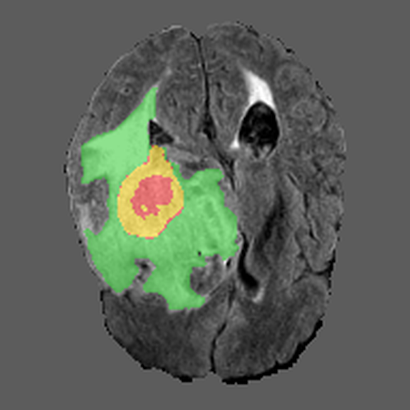
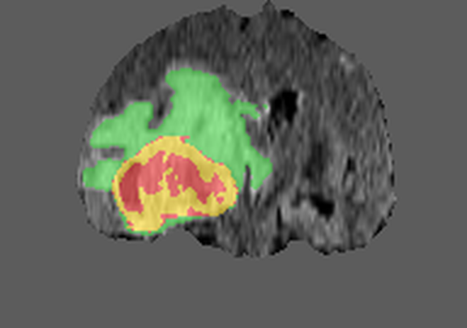
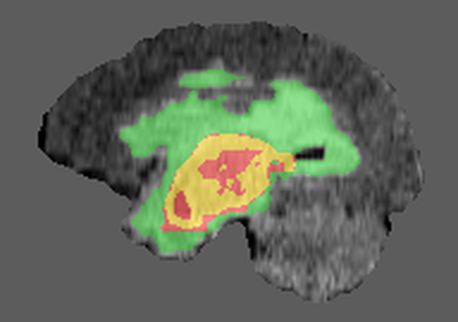
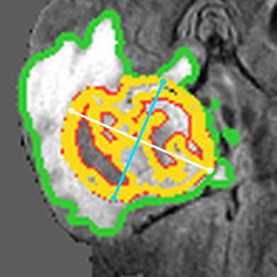
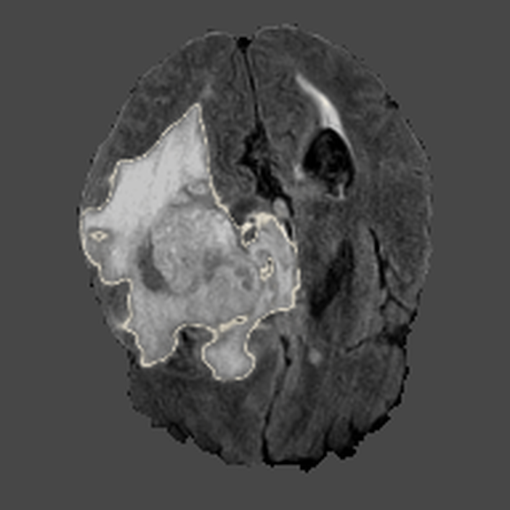
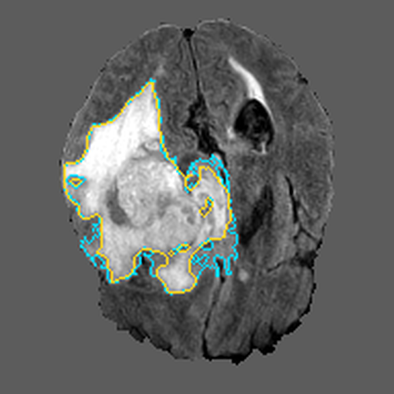
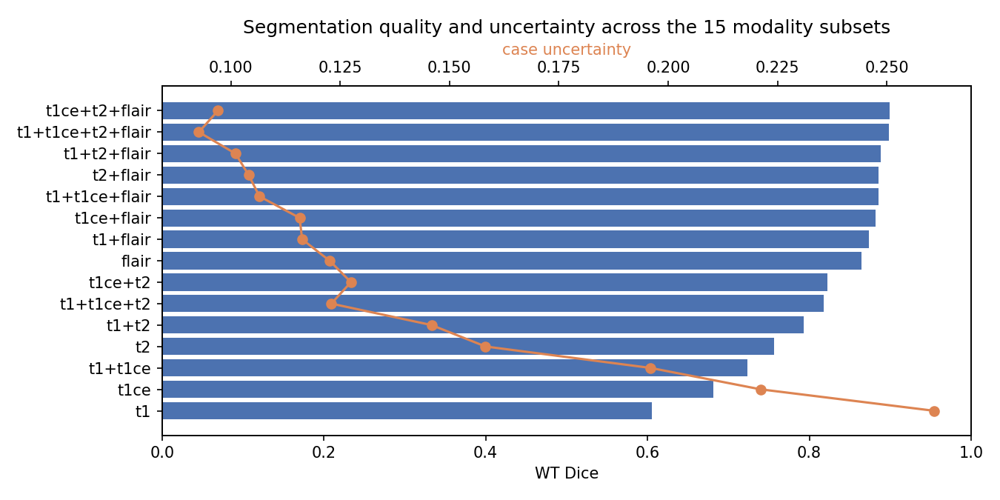
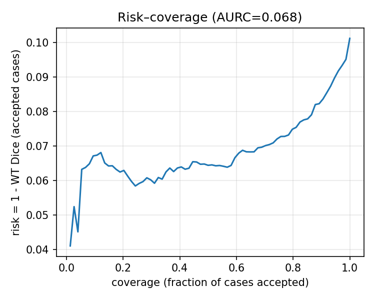

A decision-support tool for radiologists. NeuroScope outlines and measures brain tumours on MRI in about a minute, tracks exact change between scans, and checks its own answer: uncertain cases are flagged for a specialist. It keeps working when scan sequences are missing.
If the app has been idle, it takes about a minute to wake up. Research prototype, not a medical device.
The model's segmentation of a test patient, rendered in your browser. Drag to rotate, scroll to zoom. Red: necrotic core. Yellow: enhancing tumour. Green: edema.
BraTS 2020, split by patient into training, validation and test sets. The review threshold was fixed on validation data before the test set was touched.



The network runs several times with dropout active. Where the runs disagree, the result is uncertain. Each case gets an uncertainty score compared against a validated threshold, so a poor outline is sent for review instead of being presented as fact.
Trained with modality dropout and tested on all 15 sequence combinations. With a single sequence it keeps a whole-tumour Dice of 0.73; the same network trained without modality dropout falls to 0.32.
Upload the zipped DICOM folder from an MRI CD. NeuroScope finds the FLAIR, T1, T1 with contrast and T2 series, aligns them, removes the skull and runs the analysis. Names and IDs are never read into the results.
The longest diameter of the enhancing tumour and the longest perpendicular diameter, the measurement used in the RANO response criteria, are computed automatically and drawn on the slice. A follow-up scan can be compared against an earlier one.





| External test | Patients | Whole tumour Dice | Failures flagged (all 15 sequence sets) |
|---|---|---|---|
| BraTS-Africa 2023, never used in training | 60 | 0.88 | 226 of 232 |
| Ablation (74 test patients) | Whole tumour Dice, 1 sequence | 2 sequences | All 4 |
|---|---|---|---|
| With modality dropout | 0.73 | 0.83 | 0.90 |
| Without modality dropout | 0.32 | 0.60 | 0.90 |
Research NIfTI files or a hospital DICOM folder. Any subset of FLAIR, T1, T1 with contrast and T2.
Missing sequences, brain coverage, noise, saturation and empty slices are checked before analysis.
A 2D U-Net (7.8 M parameters) trained on BraTS 2020 labels the necrotic core, enhancing tumour and edema on every slice.
Monte Carlo dropout gives a per-voxel uncertainty map and a case score compared with the validated threshold.
Volumes, bidimensional measurement, separate regions a reviewer can reject, and follow-up comparison.
A printable report with findings, quality-control flags, key slices, and a plain-language page for the patient.